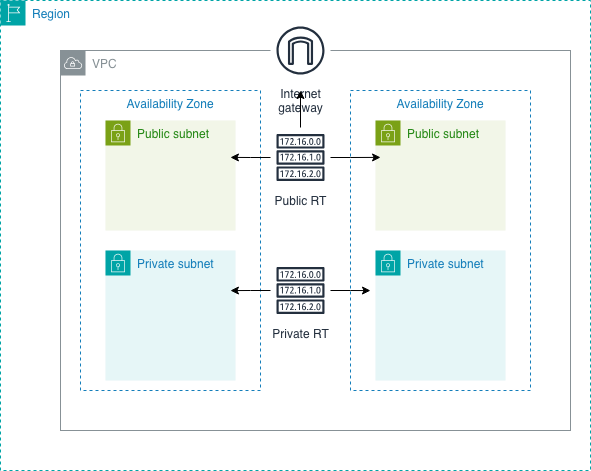
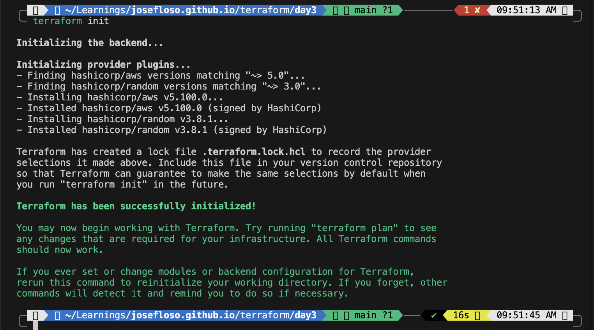
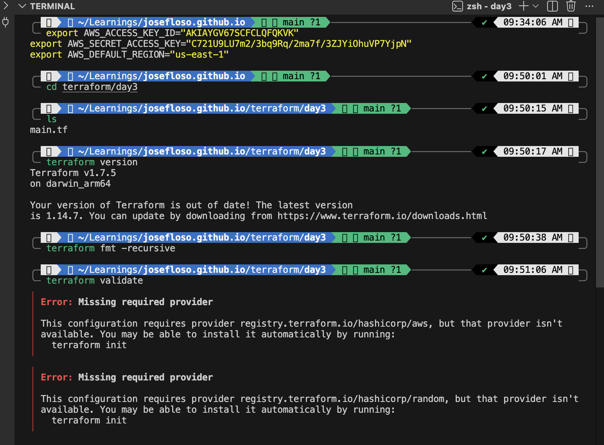
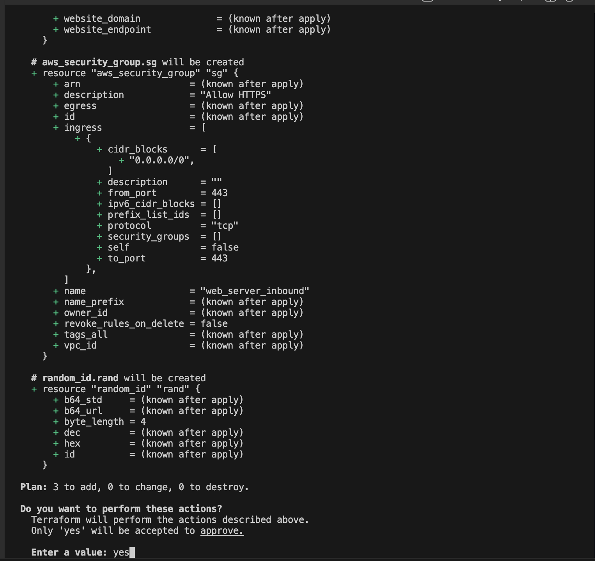
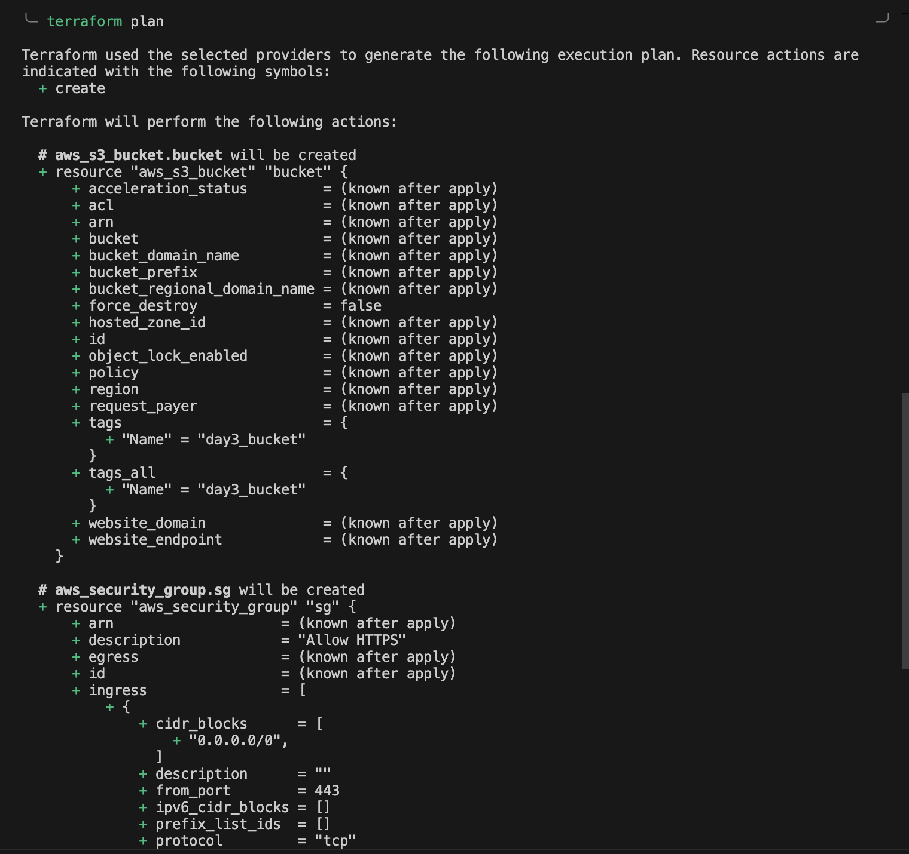
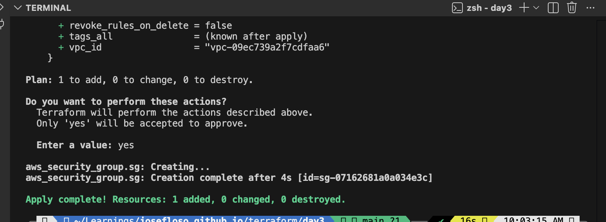
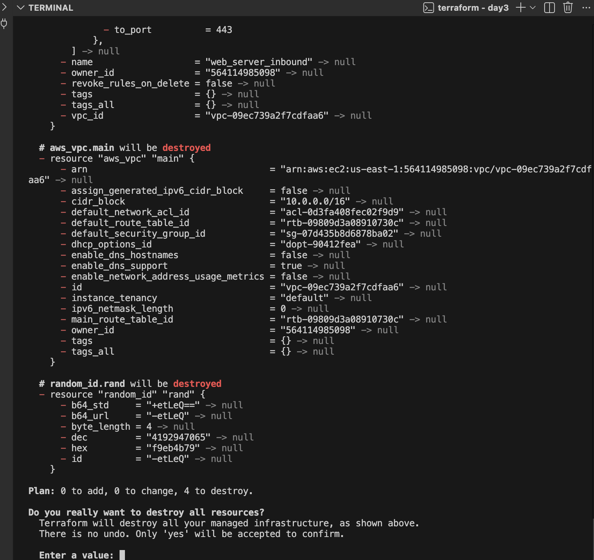

Terraform lets you define infrastructure as code. Instead of clicking around in AWS, you write configuration files and Terraform provisions everything for you.
terraform -version)
provider "aws" {
region = "us-east-1"
}export AWS_ACCESS_KEY_ID="your-access-key"
export AWS_SECRET_ACCESS_KEY="your-secret-key"
export AWS_DEFAULT_REGION="us-east-1"terraform initWhat it does:


resource "aws_s3_bucket" "day3_bucket" {
bucket = "tf-day3-bucket-joseph"
tags = {
Name = "day3-s3-bucket"
Purpose = "Terraform Lab"
}
}terraform planWhat it does:


terraform applyCreates the resources after confirmation.

terraform destroyThis removes all created infrastructure.

| Command | Purpose |
|---|---|
| terraform init | Initialize project |
| terraform plan | Preview changes |
| terraform apply | Create/update infrastructure |
| terraform destroy | Delete all resources |
Terraform simplifies infrastructure by turning it into code. Once you understand providers, resources, and core commands, you can reliably deploy and manage infrastructure.